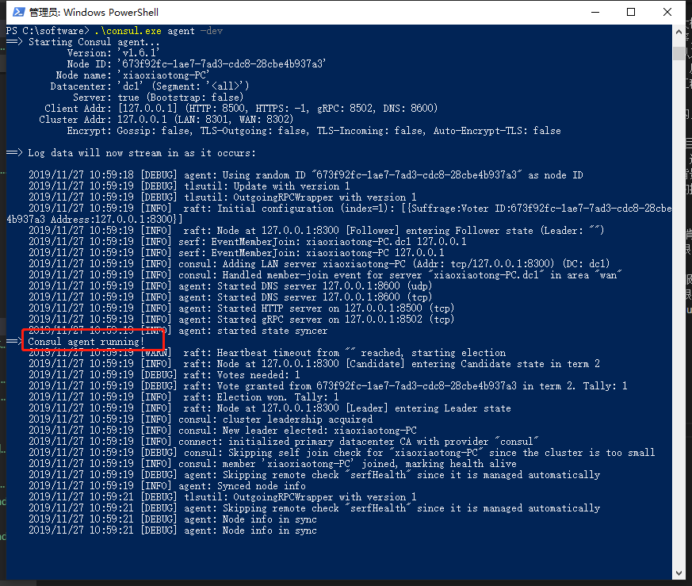
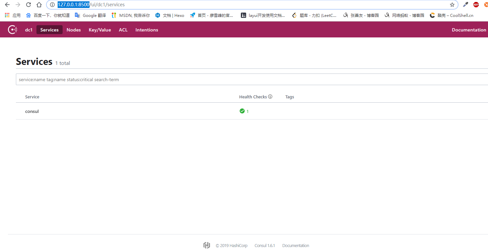
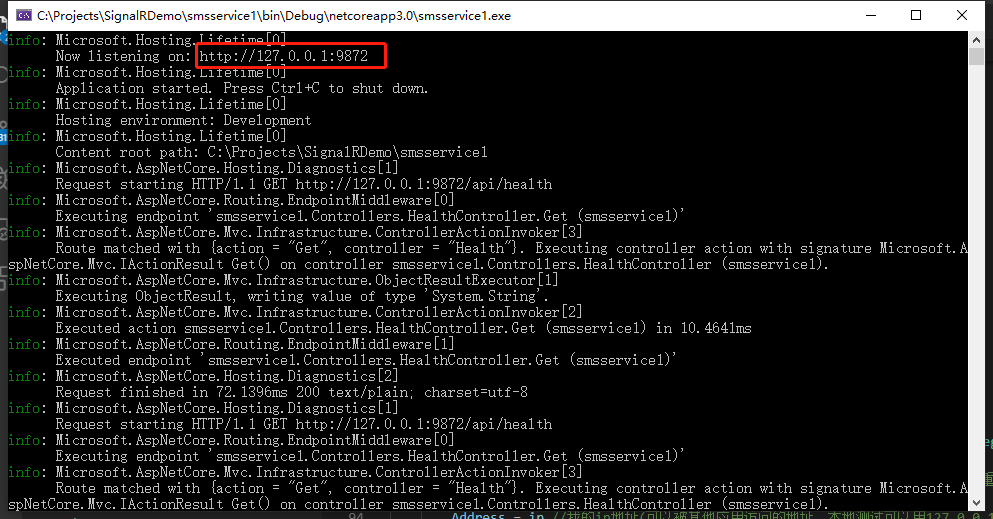
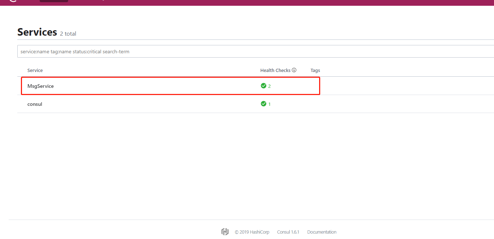
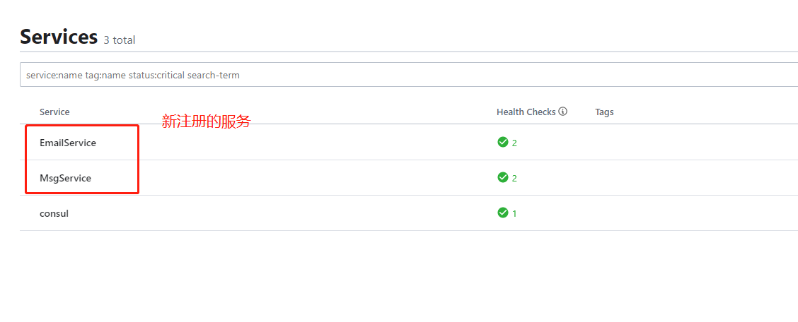
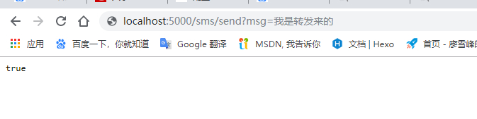
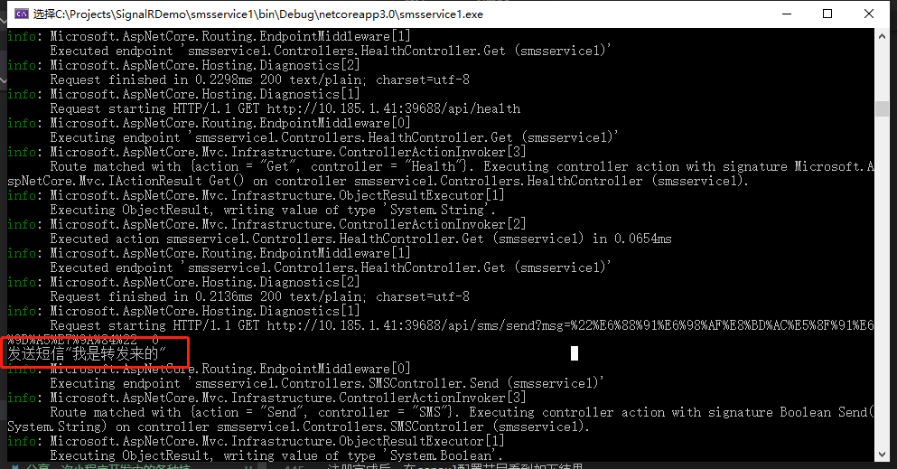

嗯，终于准备开始写微服务了，先声明下，这里因为是初探，只能算是小小小有所悟，能介绍的内容也不多，当然我也没有实战项目的经验，所以肯定会有很多写的不好的地方，所以，欢迎拍砖！！
其实我写技术类的博客，一般偏工具类居多，框架类的很少，平时看别人写的技术博客和文章，也不爱看框架类的东西，除非是知名大V写的东西，不然我不敢确定他写出来的东西是不是对的，或者是不是最优的，我始终觉得对于新学的东西，初次的印象非常重要，而工具不一样，工具类是一种开箱即用的技术，几乎是放之四海皆准，我分享的只是一种封箱的过程，提供的是一种解决问题的思路，从而可以从某个角度切入系统，高效的解决某些常见的问题。
而框架不一样，可以说我们做系统，做软件，框架的选择一旦决定，整个的系统风格，也就差不多定了，就像设计师设计大楼一样，设计图纸是经过多方敲定的，一旦开始施工，便要严格按照图纸规范来施工，比如钢材用什么样的，玻璃的防震等级是几级，层高多少，水泥的石灰砂石比等等，都是不能随意修改的。同样的，系统开发框架也是一样，因为框架本身就是一种经过验证的软件开发的半成品，比如我们常说的.net mvc，spring，yii，rails，以及前端用到的jQuery，vue等，也因此，如果我们想在自己的项目里使用框架，便需要遵循框架的诸多约定，不能随意挥洒，注意，遵循这种约定并不是限制开发能力，反而是因为遵循了这些约定，才会更大限度的发挥框架的作用，更好的完成我们的项目。因此上升到框架的层面，大多是需要有经验的高级程序员或者是架构师级别的工程师，写出来的东西，才会让人信服，因为在框架的应用上，成熟的项目经验非常重要。（我写微服务可不是想证明我高级，充其量算总结吧）
而今天我们要说的微服务呢，我觉得它也不能算框架，它跟像是是多个框架的交叉在一起的产物，所以人们常说微服务架构，但最近这个概念炒得实在是太火了，而且不管是大厂小厂，都在用，是一种实实在在的火，所以我也想凑个热闹。
哈哈，一不小心又扯多了，来来，咱们聊微服务。
关于微服务的具体介绍呢，只要你不是那么闭塞，肯定也看过不少，不论是技术类公号，还是微博或者博客上，大V们说的肯定都比我全面，所以，我这就分享一篇吧，传送门:https://www.zhihu.com/question/65502802?sort=created，这是知乎上的一篇，图片介绍很丰富，内容也很通俗幽默。
目前.net 生态里好像还没有像spring cloud那种云原生开发框架的集大成者出现（可能我见识短浅），所以，我们在搭建微服务架构时需要的开发组件，得自己安装。
首先，我们要有一个服务注册中心，可能目前比较常用的是consul和zookeeper，他们都支持集群部署，对容器的支持也很好，这里我用的是consul。
先到consul的官网https://www.consul.io/去下载对应开发环境的软件（这里就不具体介绍consul了，大家可以到官网去查看，consul的功能还是很强大的，因为我了解的也不多，所以这里就简单介绍）。
开发环境下启动consul
1 | consul.exe agent -dev |

看到图片中标红的提示，说明consul已经正常启动了，consul启动后，会有一个占用8500端口的http服务随之启动，可以打开浏览器http://127.0.0.1:8500/，查看consul的配置界面。

然后我们创建一个.net core mvc项目，使其注册到consul中心
我们新建一个控制器，当做consul的心跳检查机制（具体可查看consul文档）的访问接口，
1 | [Route("api/[controller]")] |
然后在项目里添加consul引用，可在包管理控制台直接输入”install-package consul”，也可以在nuget包管理器搜索consul安装
修改一下program.cs
1 | public static IHostBuilder CreateHostBuilder(string[] args) |
然后修改startup.cs文件里Configure方法，注册相关服务
1 | public void Configure(IApplicationBuilder app, IWebHostEnvironment env) |
然后，注意不要使用iis或者iisexpress，以控制台的方式启动项目(kestrel)，

然后我们打开刚才的consul管理界面，可以看到我们刚注册的服务已经出现了

接着，来说说，熔断降级，后边会说到Ocelot框架，其实本身Ocelot里集成了熔断降级相关的组件，通过简单配置即可，但是吧。。。这个Ocelot的官方文档，是英文版的，额，我也是在继续学习中，目前对于Ocelot了解甚少，只是对其网关组件相对熟悉，其他还是懵逼状态，所以就把熔断降级单拎出来说一下，当然，能单拎出来，也是通过学习别的大牛的博客https://www.cnblogs.com/wyt007/p/9150116.html介绍，在稍加总结得来的。好了，这些就不多说了，看东西吧。
关于熔断降级，我们需要使用到Polly（.net 基金会认可并推荐的一个库）
看下代码吧，
在控制台程序里，首先引用polly和AspectCore（哎呀，真是越写东西越多），aspectcore是一个AOP框架，我们可以在项目里引用它，方便的在方法中实现全局拦截，有点像写webapi时用到的请求拦截，目的是使系统保持原有清晰的业务逻辑，降低耦合性，提高代码重用性。
首先创建一个拦截类（东西有点多，但好多都是框架文档里原生的东西，我这直接拿过来的，如果觉得看我写的东西渣，可以去看文档）
1 | /// <summary> |
然后我们编写一个Person类（aspect文档里的例子，稍加改造）
1 | public class Person |
然后在program.cs主函数里编写
1 | static void Main(string[] args) |
执行看下效果
关于aspect，我这里只是一笔带过，其中还有很多值得深究的东西受制于篇幅，以及当前的知识面，就没多说，这一块如果您已经是微服务的高手了，可以直接忽略，小白同学，可以直接把我灌得这几款代码放到项目里运行，然后在体会一下熔断降级的概念。
在分享一张熔断器的设计图
好了，我们继续回到框架上来吧，前面提到了Ocelot，我们用Ocelot来做个测试网关，集成前面在consul注册的服务。
我们新建一个网站项目，然后分别引用Ocelot和Ocelot.Provider.Consul两个包，
然后新建configuration.json文件(这个文件里的具体参数解释，Ocelot的文档里都有，我在注释里简单介绍下)
1 | { |
然后我们在program.cs里修改CreateHostBuilder
1 | public static IHostBuilder CreateHostBuilder(string[] args) => |
接着在startup.cs里引入
using Ocelot.DependencyInjection;
using Ocelot.Middleware;
using Ocelot.Provider.Consul;
三个命名空间，然后修改ConfigureServices和Configuration
1 | public void ConfigureServices(IServiceCollection services) |
然后启动项目，因为我们之前注册了MsgService服务，同样的方式在注册一个EmailServices服务
注册完成后，在consul配置节目看到如下结果

接着我们可以试一下Ocelot为我们提供的网关效果，比如，我在浏览器地址栏输入http://localhost:5000/sms/send?msg=我是转发来的

效果和直接请求服务http://10.185.1.41:39688/api/sms/send?msg=我是转发来的效果是一样的，但是Ocelot帮我们做好了转发，所以只需要根据在配置文件里输入的上游请求模板，即可得到从该服务处获取的数据
再看下MsgService打印的数据结果

呼，就到这吧，真是书到用时方恨少，写不动了。。。还得再多看这些知识。
最后总结下，微服务的架构，我在前面推荐的文章里也提到了，有利有弊，我觉得最大的弊端，不是开发上的，而是沟通上的，因为微服务这个东西，不是说你自己一个人想架构就能架构起来的，而是要和团队协商好，真正的拆分已有的业务模型，掌控好拆分的粗细粒度，甚至连库表结构都要拆分，是一个需要从长计议的事情，也因此，很多公司短时间内没办法转型到微服务，或者其他架构，而在我看来，这也是区分一个团队价值的地方，如果一个团队里全是热血向上的好青年，他们对技术，对产品有着极致的追求，那这种转型，对他们来说剩下的就仅仅是时间问题了，而如果跳不出舒适圈，总是原地踏步的话，难免会随着时间的推移被历史所淘汰，所谓温水煮青蛙，现实就是这么滴残酷，逆水行舟，不进则退。我个人认为如果公司的业务规模足够，而且你的团队确实出现了一些同时维护多个单体应用所带来的的一些弊端，还是有必要下决心转型到微服务架构上来的，一是的确会提高整体的系统水平，而是对团队开发能力的提升也是有极大的帮助，如果只做单体应用，难免成为一个只会写网站，写软件的普通程序员，当下的技术环境，会写网站写软件，已经不算是加分项了，慢慢变成了一个基本技能，如果想提高，无非就是两头发展，一是深入底层，了解底层结构，比如某个框架的底层实现，语法糖的封装原理，各类算法等等，再有就是向上，提高认知水平，从更高的层面来掌控系统，比如架构设计，技术选型等等，当然这两条看似相反的路，其实是相同的，只有两条路都走顺了，整体的开发能力才会变得更加硬核，更加自信。
当然，这话更多的是给我自己说的，共勉！